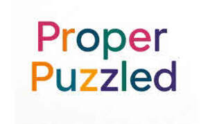

Trade Mark Journal No.2025/029 18 July 2025
UK00004229666 6 July 2025 (16)

- Class 16
- Books; Non-fiction books; Crossword puzzles; Series of non-fiction books; Picture books; Story books; Fiction books; Series of computer game hint books; Comic books; Coloring books; Computer game hint books; Series of fiction books; Fantasy books; Manuscript books; Music books; Writing books; Painting books; Gift books; Printed music books; Baby books [storybooks]; Colouring books; Strategy guide books for computer games; Printed books; Drawing books; Scrap books; Educational books; Score books; Manga comic books; Books for children; Sketch books; Poster books; Copy books; Strategy guide books for card games; Graphic art books; Exercise books; Flip books; Coloring books for adults; Hymn books; Activity books; Recipe books; Commemorative books; Guide books; Ledgers [books]; Sticker books; Prayer books; Agenda books; Song books; Composition books; Writing or drawing books; Jackets of paper for books; Cookery books; Birthday books; Music note books; Wallpaper pattern books; Books in the fields of games and gaming; Covers for books; Autograph books; Ledger books; Books featuring fantasy stories; Pop-up books; Hand books; Resource books; Baby books; Coupon books; Data books; Index books; Paper for wrapping books; Travel books; Reference books; Dictation books; Information books; School writing books; Wirebound books; Religious books; Note books; Rule books for playing games; Check books; Musical score books; Sticker activity books; Printed books in the field of music education; Memorandum books; Blank journal books; Pocket books [stationery]; Cook books; Address books; Signature books; Books featuring fictional stories; Bill books; Log books; Rule books; Wedding books; Cheque books; Baby memory books; Date books; Visitors books.
Sharon Silverwood